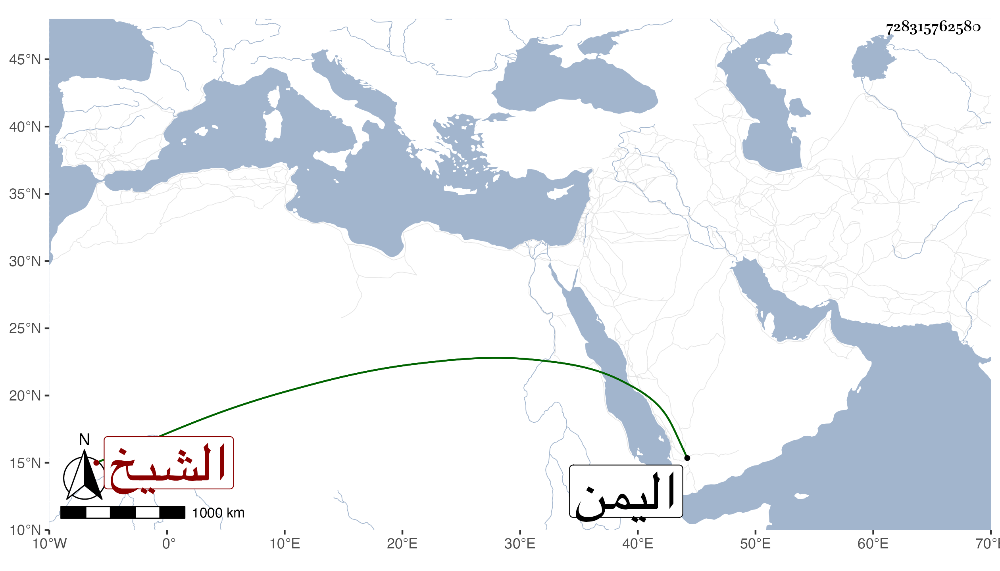

0902Sakhawi.DawLamic.ITO20230111-ara1.EIS1600.728315762580
Biography ID: 728315762580
375
عبد الوهاب بن داود بن طاهر بن تاج الدين الشيخ أبو ... ويعرف بابن طاهر ملك اليمن بعد عمه علي بن طاهر الآتي فدام أزيد من عشر سنين وفشا الأمن أيامه في اليمن كله ودانت له الرقاب ومات في ليلة الأربعاء سابع جمادى الأولى سنة أربع وتسعين وقد جاز الستين واستقر بعده ابنه صلاح الدين عامر ولقب بالظافر .
